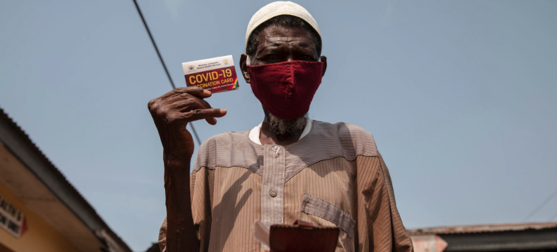

ACCESS TO COVID-19 Tools Accelerator (ACT)
Access to COVID-19 therapeutics have not yet received the same financial and political commitments as vaccines. Waning immunity and potential emergence of vaccine resistance among new variants may also compromise impact of vaccines. As has been the case with other vaccine-preventable illnesses such as bacterial meningitis, pertussis, and influenza, therapeutics can play an important role in disease control alongside vaccines. The Access to COVID -19 Tools Accelerator (ACT-A) is a multilateral coordination mechanism set up to accelerate development, production, and equitable access to COVID-19 tests, treatments, and vaccines globally. The concept brings together governments,scientists, businesses, civil society, philanthropists and global health organisations.
Despite its bold vision, ACT-A has thus far fallen short of its expectations. As described above, COVAX, the vaccines pillar of ACT-A, failed to meet the relative modest goals of 20% vaccination. Oxygen therapy, still one of the best treatments available for severe cases, has not been strategically prioritised despite its critical importance. Testing did receive political attention but has been a bottleneck in many countries. Dexamethasone
The Access to COVID-19 Tools (ACT) Accelerator brings together governments, scientists, businesses, civil society, and philanthropists and global health organizations (the Bill & Melinda Gates Foundation, CEPI, FIND, Gavi, The Global Fund,Unitaid, Wellcome, the WHO, and the World Bank).These organizations have joined forces to speed up an end to the pandemic by supporting the development and equitable distribution of the tests, treatments and vaccines the world needs to reduce mortality and severe disease, restoring full societal and economic activity globally in the near term, and facilitating high-level control of COVID-19 disease in the medium term.
Identifying inexpensive, widely available, and effective therapies against COVID-19 is, therefore, of great importance. Current effective and inexpensive therapies include corticosteroids (dexamethasone) the potentially useful serotonin re-uptake inhibitor (SSRI) fluvoxamine. However, access to potenti anti-inflammtory agents such as toclizumbab, or the antivirals remdesivir, manuprivir, R.
Global efforts to date have been unsuccessful in providing equitable access to covid-19 vaccines, therapeutics, and diagnostics. A core underlying issue has been a lack of shared vision that these essential public health tools should be considered a “global health commons”. Future systems for vaccines, therapeutics, and diagnostics should be pre-negotiated among countries, manufacturers, and international institutions. Future systems should be reshaped to ensure equitable access is considered from design through to manufacturing and procurement processes. Agreements around technology transfer and intellectual property licensing, regional trial networks, inclusive governance, and substantial predictable financing are essential

Image: World Health Organization